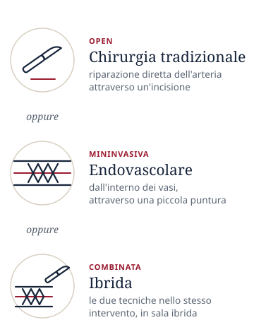
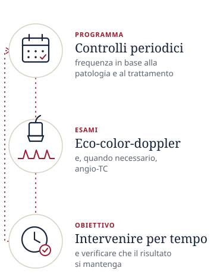

Dalla diagnosi al follow-upChirurgia vascolare a Padova: diagnosi, trattamento e follow-up
Nell'Unità di Chirurgia Vascolare ed Endovascolare dell'Azienda Ospedale-Università Padova mi occupo delle malattie delle arterie in tutte le fasi del percorso: la diagnosi, la scelta e l'esecuzione del trattamento, i controlli nel tempo. Le patologie principali sono gli aneurismi dell'aorta, la stenosi carotidea e l'arteriopatia degli arti inferiori.
Le arterie possono ammalarsi in due modi: restringendosi fino a chiudersi (malattia ostruttiva) oppure dilatandosi fino a formare un aneurisma (malattia dilatativa). In entrambi i casi il percorso segue le stesse tappe, adattate alla tua situazione.
Patologie trattate
Per ciascuna patologia trovi una pagina dedicata: che cos'è, quali sintomi dà, come si diagnostica e quali sono le possibilità di trattamento.
Una diagnosi precisa è il punto di partenza di ogni decisione.
Tutto inizia dalla visita specialistica: raccolgo la storia clinica, i sintomi, i fattori di rischio (fumo, pressione alta, diabete, colesterolo) e i farmaci che assumi, ed eseguo l'esame obiettivo, con la valutazione dei polsi arteriosi. In base al quadro, gli esami utili sono:
eco-color-doppler: esame ecografico che non usa radiazioni né mezzo di contrasto. È spesso il primo esame e può essere eseguito nel corso della stessa visita;
angio-TC: TAC con mezzo di contrasto che fornisce immagini tridimensionali delle arterie. È un esame di secondo livello, da eseguire su indicazioni ben precise;
angiografia: studio delle arterie con mezzo di contrasto iniettato attraverso una piccola puntura, di solito all'inguine.
Prestazioni ambulatoriali prenotabili
Sono indicate con la stessa dicitura che trovi sulla richiesta del tuo medico.
PRIMA VISITA CHIRURGICA VASCOLARE
VISITA CHIRURGICA VASCOLARE DI CONTROLLO
ECO-COLOR-DOPPLER
tronchi sovra-aortici
aorta addominale
arterie renali
arterie viscerali
arterioso degli arti superiori
venoso degli arti superiori
arterioso degli arti inferiori
venoso degli arti inferiori
2
Trattamento

Le possibilità di trattamento
Non tutte le malattie delle arterie richiedono un intervento.
stenting di carotidi comuni, succlavia e tronco anonimo
2Arco aortico
Aneurismi dell'arco
endoprotesi dell'arco aortico
3Aorta toracica e toraco-addominale
Aorta toracica
riparazione endovascolare degli aneurismi (TEVAR)
Aorta toraco-addominale
riparazione endovascolare degli aneurismi (FEVAR, BEVAR)
4Aorta addominale e arterie iliache
Aneurismi dell'aorta addominale
riparazione chirurgica
riparazione endovascolare (EVAR)
aneurismi complessi: FEVAR, BEVAR, PMEG
Ostruzioni aorto-iliache
bypass aorto-iliaco-femorale
stenting iliaco
5Arti inferiori
Arterie degli arti inferiori
angioplastica e stenting
bypass
Arteria femorale
endoarterectomia
6Varici
Varici degli arti inferiori
terapia sclerosante
Le sigle, in breve
EVAR
endoprotesi per l'aneurisma dell'aorta addominale
TEVAR
endoprotesi per l'aorta toracica
FEVAR
endoprotesi fenestrata, con aperture che mantengono il flusso nelle arterie di reni e intestino
BEVAR
endoprotesi ramificata, con diramazioni per le stesse arterie
PMEG
endoprotesi modificata dal chirurgo per il singolo paziente, usata soprattutto nei casi urgenti
3
Follow-up

I controlli nel tempo
I controlli nel tempo fanno parte della cura.
Quando la malattia non richiede ancora un intervento, come un piccolo aneurisma o una stenosi carotidea moderata, i controlli periodici permettono di seguirne l'evoluzione e di intervenire per tempo se necessario.
Dopo un intervento, i controlli verificano che il risultato si mantenga nel tempo. Sono particolarmente importanti dopo il trattamento endovascolare dell'aorta, perché l'endoprotesi va seguita con esami periodici. Di solito si utilizzano l'eco-color-doppler e, quando necessario, l'angio-TC; la frequenza dei controlli dipende dalla patologia e dal tipo di trattamento.
Le tecniche di trattamento
Le tecniche della chirurgia vascolare non sono in alternativa tra loro: ciascuna ha indicazioni, vantaggi e limiti. Praticarle tutte permette di scegliere in base alle caratteristiche della persona e della sua malattia. L'elenco degli interventi eseguiti è nella sezione Trattamento.
Chirurgia tradizionale "open"
L'arteria malata viene raggiunta attraverso un'incisione e riparata direttamente.
Chirurgia endovascolare
Si interviene dall'interno dei vasi, attraverso una piccola puntura, di solito all'inguine, guidando cateteri e dispositivi sotto controllo radiologico.
Procedure ibride
Combinano nello stesso intervento una parte chirurgica tradizionale e una endovascolare, per sfruttare i vantaggi di entrambe nei casi più complessi. Si eseguono in sala operatoria ibrida, ad alta tecnologia e con apparecchiature radiologiche dedicate.
Come si sceglie il trattamento
Non esiste una tecnica valida per tutti e non necessariamente una tecnica è migliore dell'altra. La scelta tiene conto di diversi elementi, che valutiamo insieme durante la visita.
La malattiaTipo, sede ed estensione della lesione e rischio che comporta.
L'anatomia delle arterieStudiata con l'eco-color-doppler e, quando serve, con l'angio-TC.
Le condizioni generaliLe altre malattie, in particolare di cuore, polmoni e reni.
L'età e lo stile di vitaLe attività che desideri mantenere e i tempi di recupero.
Le tue preferenzeEspresse dopo una spiegazione chiara di vantaggi, rischi e alternative.
I controlli nel tempoIl tipo di follow-up che ciascuna opzione richiede.
La decisione finale è condivisa: ti spiego ogni opzione e scegliamo insieme il percorso più adatto a te.
Prenota una visita
Visite ed esami in libera professione presso l'Azienda Ospedale-Università Padova, Via Giustiniani 2.
Quando prenoti, indica la prestazione con la stessa dicitura della richiesta del tuo medico: PRIMA VISITA CHIRURGICA VASCOLARE, VISITA CHIRURGICA VASCOLARE DI CONTROLLO oppure ECO-COLOR-DOPPLER.
Per telefono049 099 0854
Dal lunedì al venerdì, 8:30–18:30
Via emailprenotazioni.liberaprofessione@aopd.veneto.it
Indica nome e cognome, luogo e data di nascita, codice fiscale, indirizzo, recapito telefonico, la prestazione richiesta e il nome dello specialista: Prof. Francesco Squizzato.
Se è il primo contatto con lo specialista, la prima visita chirurgica vascolare; se sei già stato visitato o operato, la visita chirurgica vascolare di controllo. Se il tuo medico ti ha prescritto un esame, come l'eco-color-doppler di un distretto specifico, indica la prestazione con la stessa dicitura riportata sulla richiesta.
Cosa devo portare alla visita?
Porta con te gli esami già eseguiti (ecografie, eco-color-doppler, TAC o angio-TC, con i referti e, se disponibile, il CD delle immagini), le lettere di dimissione di eventuali interventi precedenti e l'elenco dei farmaci che assumi.
L'eco-color-doppler richiede una preparazione?
Per la maggior parte dei distretti, come le carotidi e le arterie degli arti, non serve alcuna preparazione. Per l'eco-color-doppler dell'aorta addominale e delle arterie renali e viscerali è consigliato il digiuno nelle 6 ore precedenti, perché l'aria nell'intestino può ostacolare la visione.
Il trattamento endovascolare è sempre possibile?
No. La possibilità di trattare una malattia per via endovascolare dipende soprattutto dall'anatomia delle arterie, studiata con l'angio-TC, e dalle condizioni generali. In alcuni casi la chirurgia tradizionale è la soluzione più adatta: la scelta si fa caso per caso, insieme.
Ogni quanto si fanno i controlli?
Dipende dalla patologia e dal tipo di trattamento. Il programma dei controlli, con gli esami da eseguire e le scadenze, viene definito in maniera personalizzata e ti viene indicato alla fine della visita o alla dimissione dopo un intervento. Dopo il trattamento endovascolare dell'aorta i controlli proseguono nel tempo.
Dove si svolgono le visite?
Le visite e gli esami si svolgono nell'area ambulatori del Monoblocco dell'Azienda Ospedale-Università Padova, in Via Giustiniani 2 a Padova.